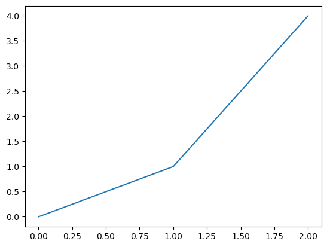
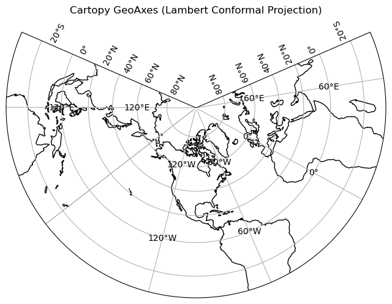
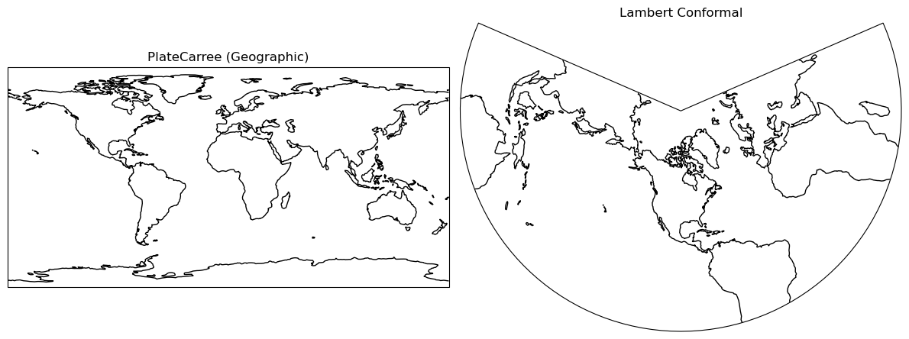

matplot pyplot demo#
import matplotlib.pyplot as plt
fig = plt.figure() # make a figure (canvas)
ax = fig.add_subplot(111) # make one Axes (a plot) in the figure
ax.plot([0,1,2],[0,1,4]) # draw on the Axes
plt.show()

import matplotlib.pyplot as plt
import cartopy.crs as ccrs
# Create a Figure
fig = plt.figure(figsize=(8, 6))
# Create one GeoAxes with Lambert Conformal projection
ax = plt.axes(projection=ccrs.LambertConformal(central_longitude=-97, central_latitude=40))
# Add features
ax.coastlines()
ax.gridlines(draw_labels=True)
# Title
ax.set_title("Cartopy GeoAxes (Lambert Conformal Projection)")
plt.show()

import matplotlib.pyplot as plt
import cartopy.crs as ccrs
# Create a Figure (canvas)
fig = plt.figure(figsize=(12, 6))
# Left: PlateCarree (simple lon/lat)
ax1 = fig.add_subplot(121, projection=ccrs.PlateCarree())
ax1.coastlines()
ax1.set_title("PlateCarree (Geographic)")
# Right: Lambert Conformal
ax2 = fig.add_subplot(122, projection=ccrs.LambertConformal(central_longitude=-97, central_latitude=40))
ax2.coastlines()
ax2.set_title("Lambert Conformal")
plt.tight_layout()
plt.show()
